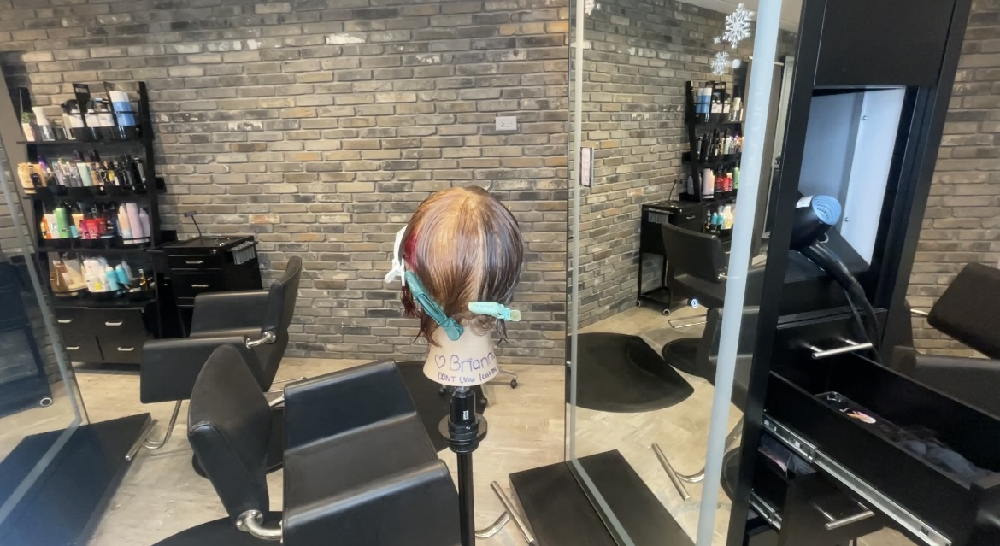
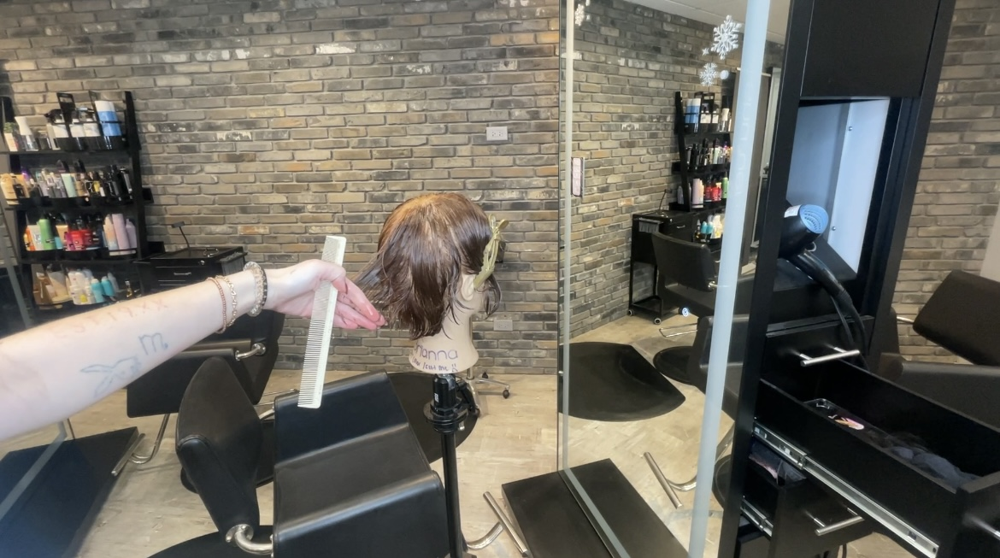
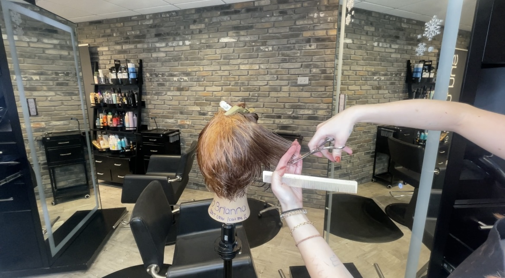
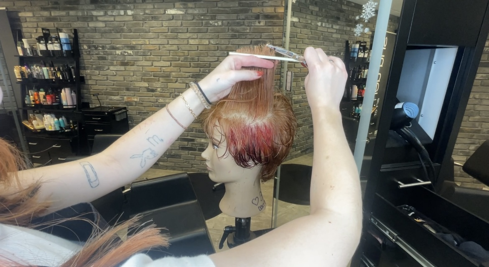
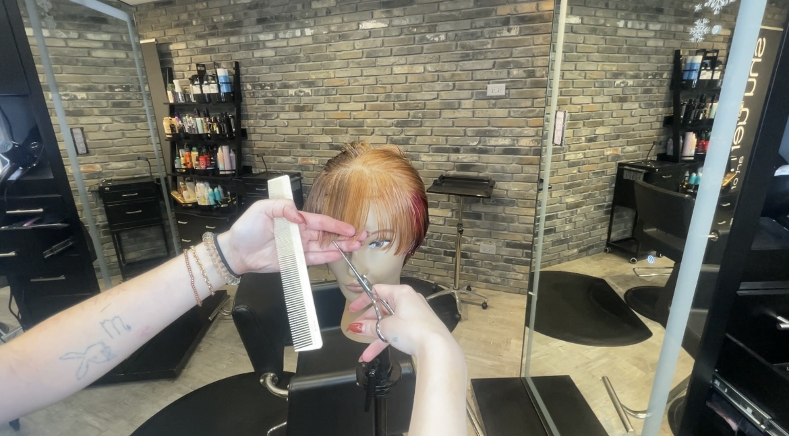
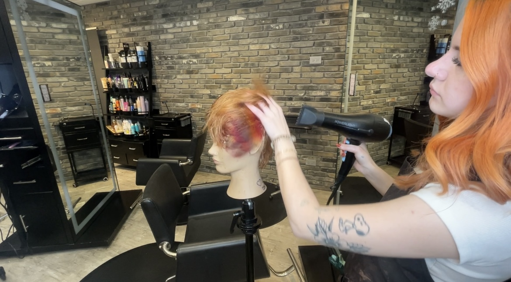

How to Cut Hair: A Step-by-Step Guide to a Short, Layered Pixie Haircut
Since you now know how to cut layers on longer hair, let's try something shorter. A pixie haircut is a fun and stylish look that’s easy to care for! The short layers give the hair texture, volume, and a modern edge.
Here’s how you can do it in 8 easy steps:
Step 1:
Prepare the Hair
Start by washing the hair and towel-drying it until it’s damp. Use the spray bottle to lightly mist it with water if it’s drying out. This will make it easier to cut.
Step 2:
Section the Hair
Divide the hair into manageable sections: the back, sides, and top. Use hair clips to separate each section for easier cutting.
Step 3:
Begin with the Back
Start at the nape (the lowest part of the back). Comb the hair down and hold it at a slight 45-degree angle to create a soft, gradual cut. Trim in small sections to ensure an even look, keeping the back short for a true pixie style.
Step 4:
Move to the Sides
For the sides, comb the hair down and cut at a 45-degree angle. Hold each section between your fingers to keep the hair in place as you cut. This angle allows the sides to blend smoothly with the back, creating a natural flow.
Step 5:
Layer the Top at a 90-Degree Angle
The top section is where you’ll create volume with layers. Pull each section of hair straight up from the scalp and hold it at a 90-degree angle to the head. Cut small, choppy pieces to create short layers that add texture and lift to the hair.
Step 6:
Blend the Layers for a Smooth Finish
Work around the top and sides to blend the layers together. Check that the angles connect smoothly so that the hair doesn’t look choppy. You can use a 45-degree angle on the outer layers to blend into the 90-degree top layers for a soft, layered effect.
Step 7:
Trim the Bangs
Trim the bangs to frame the face. You can cut them at a slight angle to create a softer look or straight across for a bold finish.
Step 8:
Final Touches
Use thinning shears or regular shears to remove any bulk from the layers and make the cut look light and even. Style with a bit of texturizing product to give the pixie cut its full, stylish look.
Conclusion
Cutting a short layered pixie haircut can seem challenging at first, but by following these steps and angle guides, you can create a beautiful, trendy look. With practice, you’ll gain confidence and precision, making each haircut better than the last.